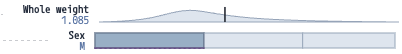

Test objective
Gather feedback on the readability, utility, and navigability of the interface during the analysis of local explanations, based on Nielsen's heuristics.
TRACE / XAI Visualization
For each of Nielsen's 10 Usability Heuristics, look for specific places where the interface fails to adhere to the guideline. Write your recommendations for how to fix those usability issues. Thank you for your time and help, here's a cookie 🍪.
What is TRACE? It is a visual analytics interface designed to explain the decision-making processes of AI models on tabular data, showing the Rules (why a decision was made) and the Counter-rules (what should change to obtain a different outcome).
Gather feedback on the readability, utility, and navigability of the interface during the analysis of local explanations, based on Nielsen's heuristics.
A dedicated viewer page with an instance selector, dynamic JSON loading, and immediate updating of the D3 visualization.
Examples from Abalone, German Credit, and Iris are available, providing a representative set of instances for the evaluation.
References: Abalone, German Credit, Iris.
To generate these explanations, TRACE integrates the LORE (Local Rule Explanator) algorithm. LORE is a model-agnostic method that analyzes the behavior of any opaque "black box" model by generating a synthetic neighborhood of data to build a transparent surrogate model (like a Decision Tree). This process allows us to extract:
The rules are integrated with Feature Importance scores generated via SHAP.
To help you explore the explanation, TRACE uses a progressive disclosure workflow. The interface consists of five steps that you can navigate using the colored dots or arrows in the menu.

The Menu Panel on the left allows you to adapt the interface to your visual preferences and analytical needs:
Researchers: Salvatore Rinzivillo,Daniele Fadda, Eleonora Cappuccio
Affiliation: Institute of Information Science and Technologies (ISTI), National Research Council of Italy (CNR), Pisa, Italy.
Disclaimer: This interface and its related study materials are part of an ongoing research work and are currently under paper submission.
Interface version: Release Candidate 0.1.